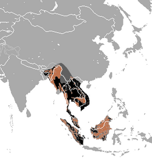

Where Do Sun Bears Live?
Sun bears inhabit the dense tropical rainforests of Southeast Asia — from Myanmar and Thailand to Malaysia, Borneo, and Sumatra. They thrive in warm, humid climates with abundant vegetation and tree cover.
Diet and Lifestyle
They are omnivores, feeding on fruits, insects, small vertebrates, and honey. Sun bears are excellent climbers, often sleeping or foraging high in trees.